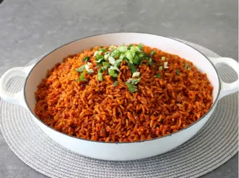
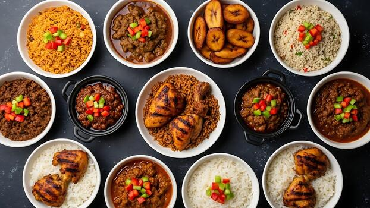
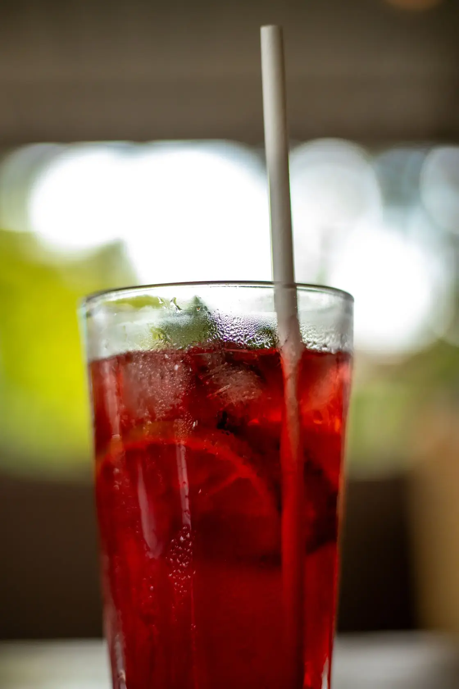
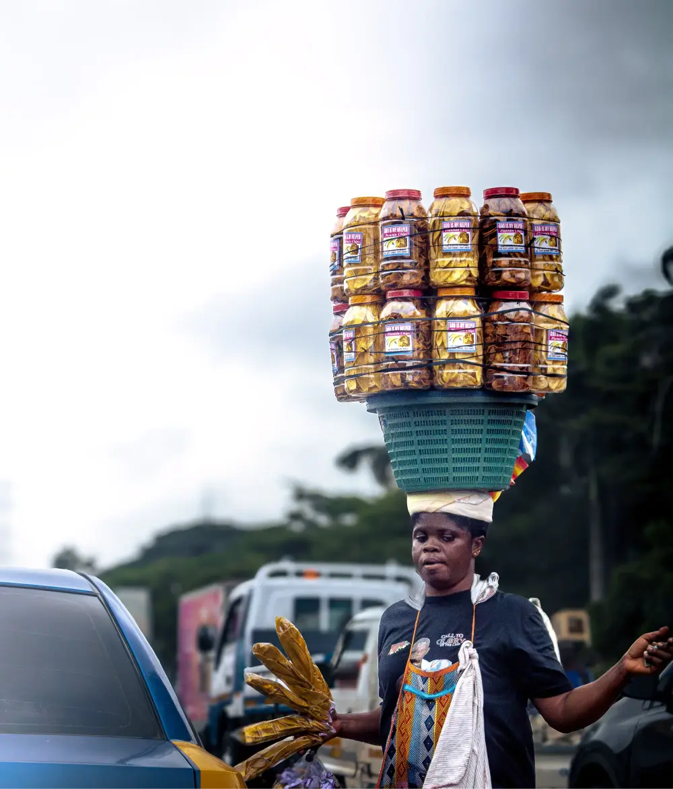

Explore Foods
Explore Foods
A Guide to Popular Ghanaian Foods
Explore delicious traditional dishes, drinks, and snacks from Ghana while learning their cultural significance.

Explore by Category


Fun Fact
Loading fact...
Share Your Experience
Have a favorite Ghanaian dish or recipe? Share it with our community!
Share Your Favorite